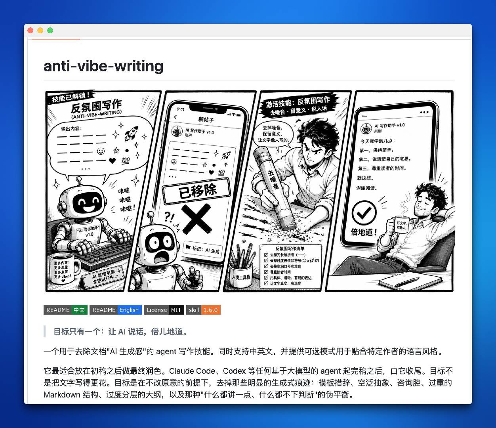

anti-vibe-writing
让 AI 生成的内容说人话——不只是润色，是把机械的、空洞的、AI 味十足的文章，改成读者真正想读的样子。去噪音、留意义、说人话。
倍儿地道。
Remove noise · Keep meaning · Speak like a human
四格漫画：反氛围写作的逻辑

过度长破折号（——）
用段落或句号替代连续破折号造成的机械停顿感。
过度 emoji 和符号
每句话挂一个 emoji 不是表达丰富，是干扰阅读节奏。
空洞口号和堆砌
"引领变革"、"赋能升级"、"全方位驱动"，说得越大越空洞。
顾问腔（Consultant-speak）
"值得注意的是"、"从以上分析可以看出"——这些句式制造权威感但不传递价值。
重度 Markdown 结构
过度编号列表、层级标题嵌套，让文章变成提纲而不是内容。
伪平衡（Pseudo-balance）
"虽然A好，但B也不差"——面面俱到等于什么都没说。
具体、清晰、有用的表达
一个具体数字、一个真实案例，比十个形容词有力得多。
尊重读者时间
把最重要的放在最前面。读者的时间比你文章的篇幅值钱。
真实、有温度的语气
允许适度的不完美——真实的停顿比虚假的流畅更可信。
逻辑连贯与核心论点
反氛围不等于随意——删掉噪音不是删掉结构。
专业准确性
润色不是篡改——去掉 AI 味不等于降低信息准确度。
适合目标读者的声音
技术文档用技术语言，社交帖子用人话——语境决定风格。
反氛围写作 6 步检查清单
去掉冗长破折号
用句号或短句替代连续破折号（——）。删除靠破折号连接的"缓冲句"。
去掉过度表情和符号
每句一个 emoji 是干扰不是丰富。保留必要的视觉分隔，删除装饰性符号。
去掉空洞口号和堆砌
"引领"、"赋能"、"驱动"——把这些词换成具体描述或直接删掉。
尊重读者时间
结论前置，不要把核心观点埋在第三段。每段只说一件事，段首即是论点。
用具体、清晰、有用的表达
用数字、案例、具体场景替代形容词。读者记住的是故事，不是形容词。
让文字真实、有温度
允许自然停顿、口语化短句和适度的段落变化。真实的不完美比虚假的完美更可信。
3 种声音模式，按场景匹配
学术模式 Academic
正式、引用规范、结构严谨。保持学术可信度同时去掉模板腔。
论文 · 研究报告 · 学术博客对话模式 Conversational
口语化、自然、轻松。提高亲和力，让读者觉得在和人说话。
社交媒体 · 个人博客 · Newsletter技术模式 Technical
简洁、准确、专业术语精准。去掉的是表述上的机械感，不是技术精准性。
技术文档 · API 说明 · 产品手册在 AI 工作流中的最佳位置：最终润色阶段
Claude Code / Codex 生成草稿
让 AI 先把内容完整写出来，不要中途润色打断生成节奏。
内容审查与结构调整
人工确认核心信息准确、逻辑完整，再进入润色阶段。
激活 anti-vibe-writing
把草稿粘贴进 Skill，选择目标声音模式（学术/对话/技术），运行。
人工复核输出
润色结果不是自动发布——检查准确度、语气是否合适，有必要时手动微调。
# 方式一：在 Claude Code 中直接调用 skill $ /skill anti-vibe-writing # 激活 skill $ 请帮我润色以下文章（对话模式） # 提供待润色内容 # 方式二：作为最终步骤嵌入 CLAUDE.md # 在项目的 CLAUDE.md 末尾加入： ## 完成后润色 所有代码和文档草稿完成后，运行 anti-vibe-writing skill 进行去 AI 味润色。 选择与目标读者匹配的声音模式：学术 / 对话 / 技术。 # 方式三：Claude Design 后的文档润色 $ /design # Claude Design 生成 UI 文档 $ /skill anti-vibe-writing # 对产出的 README/注释做润色 # 方式四：在 Codex 中通过 prompt 调用 $ # Role: anti-vibe-editor $ # 任务：去除以下文本的 AI 痕迹，保持信息完整 $ # 模式：conversational $ # 待润色内容： $ ...
# anti-vibe-writing 集成的四大中文 AI 痕迹模型 1. 词汇层面 → 空洞动词 引领、赋能、驱动、撬动、助推、构筑、夯实 → 替换建议 具体动词替代，或直接删掉 2. 句式层面 → 无效连接词 首先、其次、最后、与此同时、值得注意的是 → 替换建议 自然段落过渡，结论前置 3. 结构层面 → 过度层级 ## 标题 → ### 子标题 → #### 三级标题 → 替换建议 最多两层，用段落而非编号列表承载内容 4. 语气层面 → 伪权威腔 从以上分析可以看出、不言而喻、毋庸置疑 → 替换建议 直接陈述，不制造权威感，用证据说话